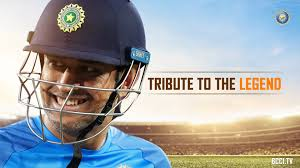

The Captain Cool
MSD is the ever truly captain cool

Mahendra Singh Pansingh Dhoni born on (7 july
1981)is a former Indian international cricketer who captained the
Indian national team in limited-overs formats from 2007 to 2016 and
in Test cricket from 2008 to 2014. Under his captaincy, India won the
inaugural 2007 ICC World Twenty20, the 2010 and 2016 Asia Cups, the 2011
icc Cricket World Cup and the 2013 ICC Champions Trophy. A right-handed
explosive middle-order batsman and wicket-keeper, Dhoni is one of the highest
run scorers in One Day Internationals (ODIs) with more than 10,000 runs scored
and is considered an effective "finisher" in limited-overs formats. He
is widely regarded as one of the best wicket-keeper batsman and captain in the
history of the game. He was also the first wicket-keeper to effect
100 stumpings in ODI cricket.
Dhoni made his ODI debut on 23 December, 2004 against Bangladesh, and played his first Test a year later against Sri Lanka. He has been the recipient of many awards, including the ICC ODI Player of the Year award in 2008 and 2009 (the first player to win the award twice), the Rajiv Gandhi Khel Ratna award in 2007, the Padma Shri, India's fourth highest civilian honour, in 2009 and the Padma Bhushan, India's third highest civilian honour, in 2018.Dhoni was named as the captain of the ICC World Test XI in 2009, 2010 and 2013. He has also been selected a record 8 times in ICC World ODI XI teams, 5 times as captain. The Indian Territorial Army conferred the honorary rank of Lieutenant Colonel to Dhoni on 1 November 2011. He is the second Indian cricketer after Kapil Dev to receive this honour.
Dhoni also holds numerous captaincy records such as the most wins by an Indian captain in ODIs and T20Is, and most back-to-back wins by an Indian captain in ODIs. He took over the ODI captaincy from Rahul Dravid in 2007 and led the team to its first-ever bilateral ODI series wins in Sri Lanka and New Zealand. In June 2013, when India defeated England in the final of the Champions Trophy in England, Dhoni became the first captain to win all three ICC limited-overs trophies (World Cup, Champions Trophy and the World Twenty20). After taking up the Test captaincy in 2008, he led the team to series wins in New Zealand and the West Indies, and the Border-Gavaskar Trophy in 2008, 2010 and 2013. In 2009, Dhoni also led the Indian team to number one position for the first time in the ICC Test rankings.
Dhoni made his ODI debut on 23 December, 2004 against Bangladesh, and played his first Test a year later against Sri Lanka. He has been the recipient of many awards, including the ICC ODI Player of the Year award in 2008 and 2009 (the first player to win the award twice), the Rajiv Gandhi Khel Ratna award in 2007, the Padma Shri, India's fourth highest civilian honour, in 2009 and the Padma Bhushan, India's third highest civilian honour, in 2018.Dhoni was named as the captain of the ICC World Test XI in 2009, 2010 and 2013. He has also been selected a record 8 times in ICC World ODI XI teams, 5 times as captain. The Indian Territorial Army conferred the honorary rank of Lieutenant Colonel to Dhoni on 1 November 2011. He is the second Indian cricketer after Kapil Dev to receive this honour.
Dhoni also holds numerous captaincy records such as the most wins by an Indian captain in ODIs and T20Is, and most back-to-back wins by an Indian captain in ODIs. He took over the ODI captaincy from Rahul Dravid in 2007 and led the team to its first-ever bilateral ODI series wins in Sri Lanka and New Zealand. In June 2013, when India defeated England in the final of the Champions Trophy in England, Dhoni became the first captain to win all three ICC limited-overs trophies (World Cup, Champions Trophy and the World Twenty20). After taking up the Test captaincy in 2008, he led the team to series wins in New Zealand and the West Indies, and the Border-Gavaskar Trophy in 2008, 2010 and 2013. In 2009, Dhoni also led the Indian team to number one position for the first time in the ICC Test rankings.
- 1999-2004 --Bihar Cricket Team
- 2018-2015 --Chennai Super Kings(squad no 7)
- 2016-2017 --Rising pune supergaint(squad no 7)
- 2018-Present --Chennai Super Kings(squad no 7)
Domestic Team Information
- National Side --India(2004-2020)
- Test Debut(cap 251) --2December2005 v srinlanka
- Last Test --26 December2014 v Australia
- ODI Debut(cap 158) --23 December
- Last ODI --9 July 2019 v NEW ZEALAND
- ODI SHIRT NO --- 7
- T20I debut (cap 2) --1 December 2006 v South Africa
- Last T20I -- 27 February2019 v Australia
- T20I Shirt no -- 7
International Information
Career Statistics
| COMPETITION | TEST | ODIs | T20I |
|---|---|---|---|
| MATCHES | 90 | 350 | 98 |
| RUNS SCORED | 4,876 | 10,773 | 1,617 |
| BATTING AVERAGE | 38.09 | 50.53 | 37.60 |
| 100s/50s | 6/33 | 10/73 | 0/2 |
| TOP SCORED | 224 | 183* | 56 |
| BALLS BOWLED | 96 | 36 | -- |
| WICKETS | 0 | 1 | -- | BOWLING AVERAGE | -- | 31.00 | -- | 5 WICKETS IN INNINGS | -- | 0 | -- |
| 10WICKETS IN MATCH | -- | 0 | -- |
| BEST BOWLING | -- | 1/4 | -- |
| CATCHES/STUMPING | 256/38 | 312/123 | 57/34 |